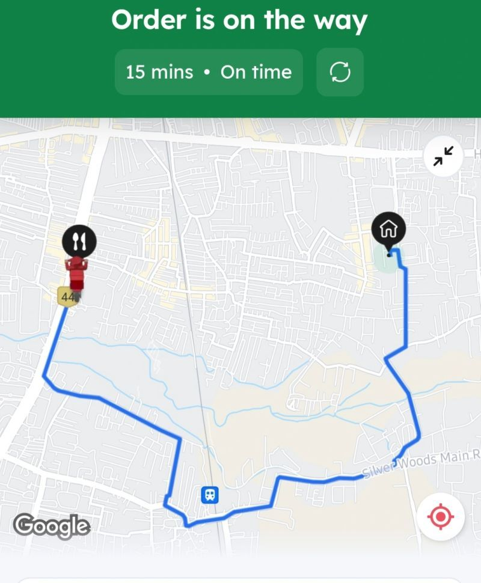

How does Zomato show your delivery partner moving live on the map without refreshing the app? 👀
Ashmita Pandey · · System Design · Distributed Systems · Real-time Systems
How does Zomato show your delivery partner moving live on the map without refreshing the app? 👀 Here’s the simplified system design behind it. The rider’s app periodically sends GPS coordinates to Zomato’s backend. The backend then: → Validates the location → Updates the ETA → Filters unnecessary updates → Pushes the latest location to your app through a persistent connection like WebSockets Since the connection stays open, your app receives tiny location updates instead of refreshing the entire screen. But there’s another neat trick. The GPS coordinates don’t arrive continuously. So how does the rider marker move smoothly instead of jumping from Point A to Point B? The frontend interpolates between GPS points, making the marker glide naturally across the map. At scale, this can be further optimized using: • Adaptive GPS polling • Smart throttling • Compressed payloads • Battery-aware tracking • Event-driven updates So that simple little moving icon on your screen? It’s backed by networking, real-time systems, location processing, optimization, and a lot of engineering. Simple to use. Complex to build. That’s the fun part of backend engineering. Which app or website should we break down next?
